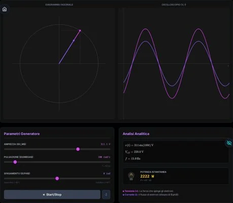

Orfini Math Lab · scheda dell'attività
Simulazione CA: Fasori & Onde
Simulatore interattivo del comportamento in Corrente Alternata (Sfasamento, Valori Efficaci, Potenza) per il corso di macchine elettriche.

Temi
- Corrente alternata
- Elettrotecnica
- Fasori
- Fisica
- Onde
Competenze (Riforma 2017)
- MAT_A2 Rappresentare dati mediante tabelle, grafici e funzioni
- MAT_C2 Utilizzare strategie del pensiero razionale per affrontare situazioni problematiche in contesti reali
- MAT_C3 Analizzare dati e interpretare informazioni con strumenti statistici e probabilistici
- MAT_K2 Funzioni elementari e loro rappresentazione
Allenati
Su federicodb.github.io/allenamento:
- Goniometria
- Trigonometria del triangolo rettangolo
Mettiti alla prova su carta
Nell'Archivio delle verifiche:
- Verifica di marzo 2026: Algebra manuale di analisi: scomposizioni, Frazioni e modelli logici, Equazioni, Disequazioni, Dominio…
- Verifica di marzo 2026: Studio di funzione, Classificazione e dominio, Funzioni, Dominio, Grafici, Retta, Polinomi, Elettricità
- Verifica di maggio 2026: Proprietà delle potenze, Frazioni e percentuali, Proporzioni in elettrotecnica…